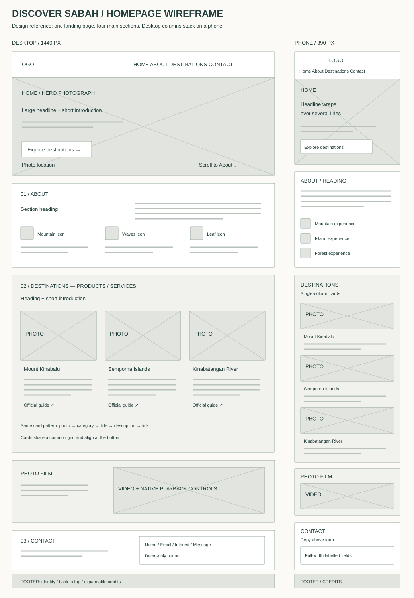

ICT2215 · ASSESSMENT 2 · DESIGN PLAN
Discover Sabah
A single-page tourism concept for international visitors, university students and young travellers exploring Malaysian Borneo.
Purpose & audience
Introduce Sabah through three contrasting landscapes. Help first-time visitors discover a destination, see a short visual introduction and find an official source for further information.
Scope & technology
One landing page, written in semantic HTML and plain CSS. Four main sections: Home, About, Destinations (Products / Services) and Contact. A display-only form; no booking service or backend.
01 / Colour palette
Ocean Blue
#126782
Links, icons, button
Forest Green
#3E8267
Heading emphasis
Sand Beige
#F5E9D3
Contact, hero button
White
#FFFFFF
Inputs, hero text
Deep Green
#173D3D
Body text, footer
Supporting neutrals: #FBFAF6 (warm paper), #EEF1E9 (destination background), #526662 (secondary text). The four agreed colours are retained; darker text and quiet backgrounds extend the palette for readability.
02 / Typography
| Role | Choice | Reason |
|---|---|---|
| H1 and H2 | Georgia, regular; italic emphasis | A relaxed editorial style that suits scenery and travel storytelling. |
| Card headings | Georgia, approximately 26px | Connect destination titles with the main heading style. |
| Body and navigation | Arial; 16px base; 1.65 line height | Readable, familiar and available locally without downloading a font. |
| Section labels | Arial bold, uppercase, letter spacing | Small visual signposts that make the page easy to scan. |
03 / Layout & CRAP principles
Contrast
A shaded hero image supports white text. Large serif headings contrast with compact sans-serif labels; the sand button stands out as the first action.
Repetition
The same palette, line icons, section labels and destination-card structure connect every part of the website.
Alignment
A shared centred container aligns navigation, headings, cards and footer. CSS Grid gives the three destination cards equal columns.
Proximity
Each photograph sits beside its own destination text. Form labels stay directly above their controls. Related content is separated from the next section by generous spacing.
04 / Content & media plan
| Section | Content | Media / interaction |
|---|---|---|
| Home | Title, brief introduction, primary action | Bohey Dulang photograph; anchor link to Destinations |
| About | Sabah overview and three experience themes | Original mountain, waves and leaf SVG icons |
| Destinations | Mount Kinabalu, Semporna Islands, Kinabatangan River | Three real photographs, official guide links and a 24-second locally embedded photo film |
| Contact | Travel invitation, responsible travel note and clearly labelled form | Compass SVG; name, email, interest, message; disabled demo button |
| Footer | Educational project identification | Back-to-top anchor and expandable image credits |
05 / Responsive & accessible behaviour
At 1000px and below, spacing decreases. At 700px and below, the header becomes two rows and content grids stack into a single column. All four navigation links remain visible. Images and video resize within the page; cards keep their natural reading order. Native video controls support playback, pause, seek and fullscreen.
A skip link, visible keyboard focus, semantic headings, descriptive photo alternatives and explicit form labels support accessibility. Motion preferences disable smooth scrolling. The film is intentionally silent, with readable titles, credits and a text description below it.
The brief requires the student's own text and understanding. This is an AI-assisted starting project. Review and rewrite the website copy in your own words, understand the HTML/CSS, and follow your course's AI disclosure rules. The form is intentionally display-only. Do not present it as a working enquiry service.
06 / Homepage wireframe
Desktop and phone layout reference. Grey boxes indicate media; numbered sections match the website. The video belongs inside Destinations, keeping four main sections.

Implementation retains this structure. Additional neutral colours improve legibility; the fourth compass icon supports the contact note. No extra page or interactive application features are required.